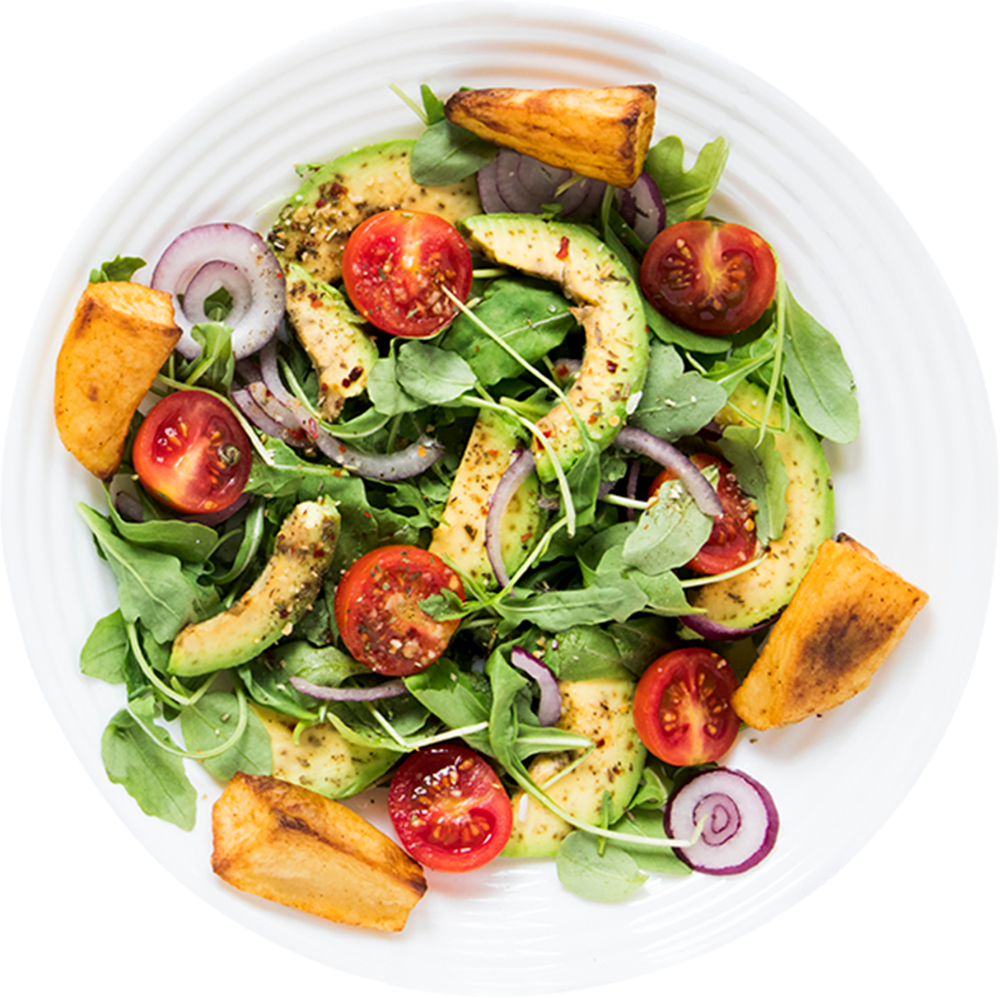

Здоровая еда - это просто!
Сеть магазинов полезных продуктов питания, производство которых основано на принципах и стандартах органического чистых продуктов


Сеть магазинов полезных продуктов питания, производство которых основано на принципах и стандартах органического чистых продуктов
Органика — это целостная система производства по-настоящему чистой, натуральной и полезной продукции
Мы полностью контролируем весь цикл производства – от поля до прилавка за счет собственной серьезной материальной и научной базы. Наш подход направлен на высокие технологии и достижения научного прогресса
Будь в тренде с современым миром, и будь здоров вместе с нами

Еда, которая заботится о вашей фигуре
Молоко Healthy food топленеое мдж 4% 500гр
159 руб/шт
Йогурт Healthy food с черникой, питьевой 1,5%, 750 г
89 руб/шт
Творог Healthy food Рассыпчатый 9% 350 г
216руб/шт
Моцарелла Healthy food 45%, 0.125 кг
359 руб/шт
Масло Healthy food сливочное 82,5%, 200г
139 руб/шт
Йогурт Healthy food термостатный с фруктово-ягодным 2,5 %, 165 г
159 руб/шт
Сыр Healthy food Сливочный 45% 200г
559 руб/шт
Соус для салата Healthy food пикантыный 4% 70гр
59 руб/шт